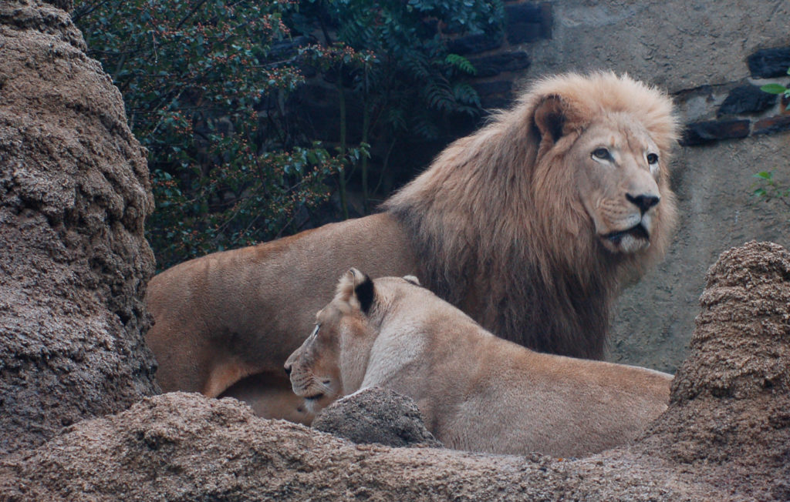
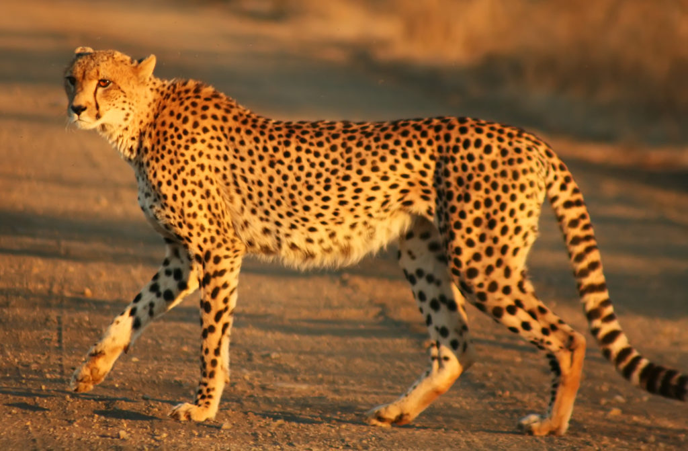
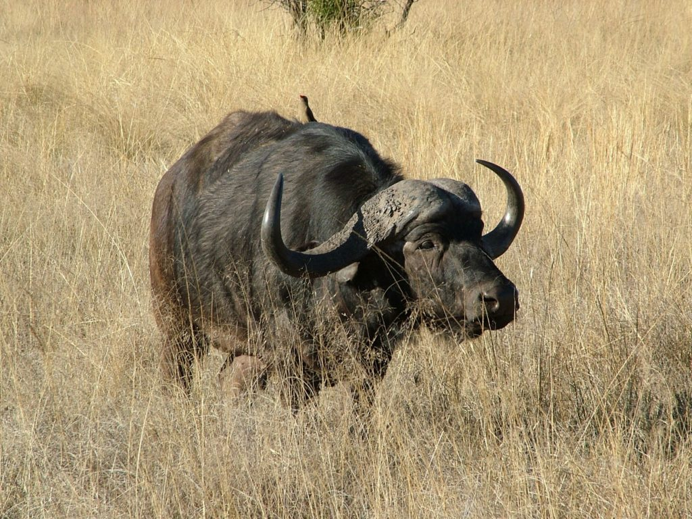
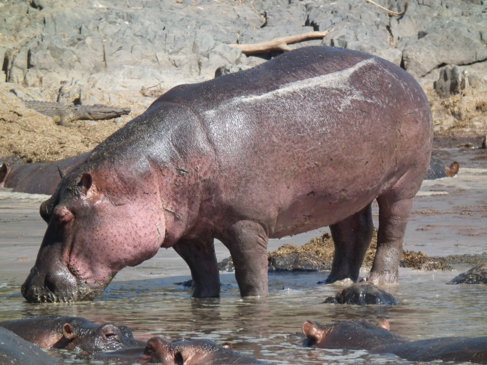
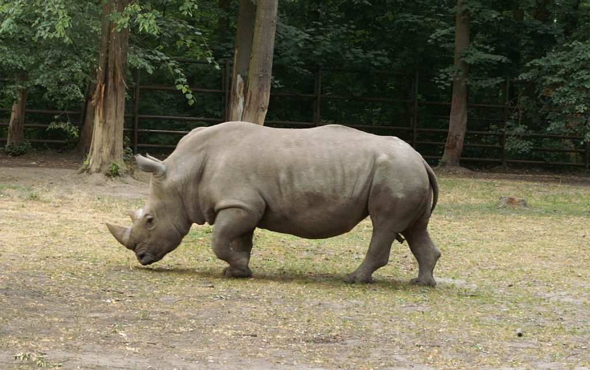
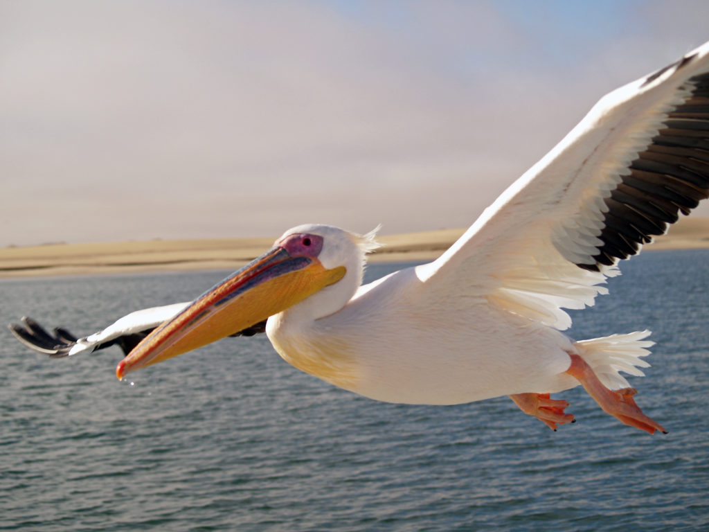
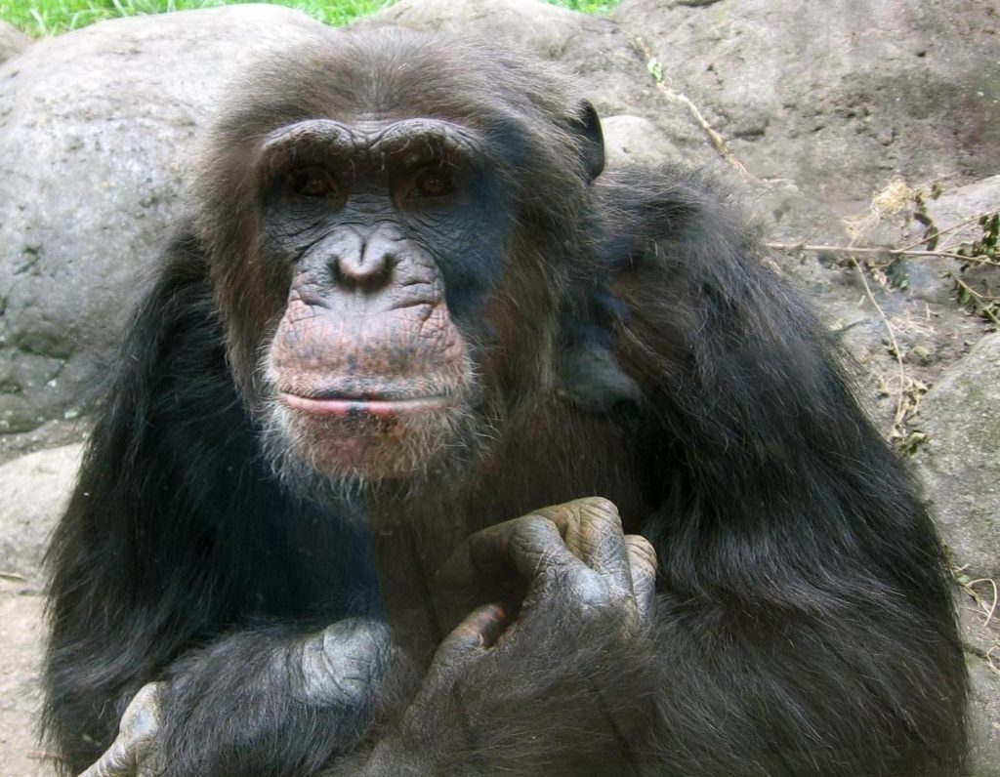
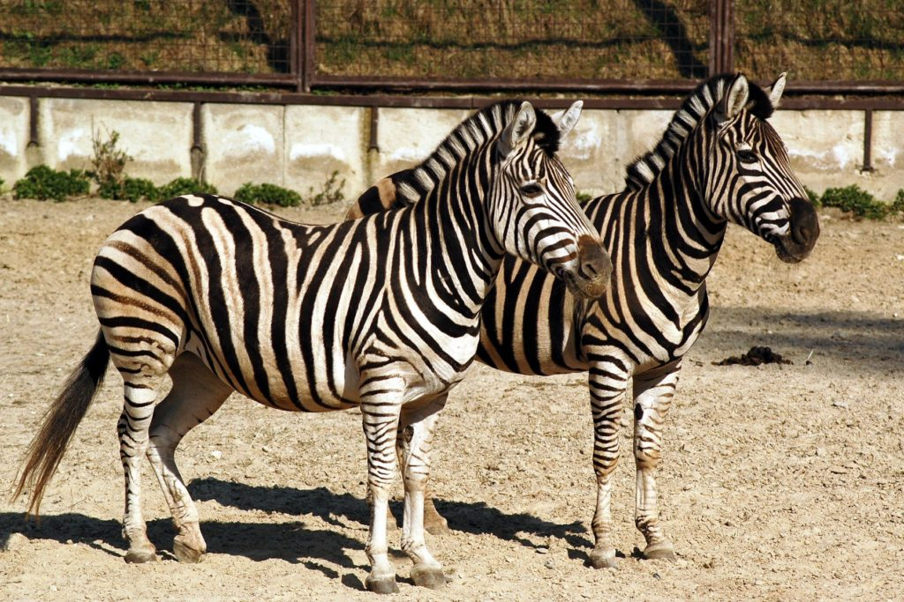

❮
❯
Afryka to kontynent o niezwykłej różnorodności biologicznej, będący domem dla wielu unikalnych gatunków zwierząt. Poniżej znajdziesz kilka ciekawych informacji na temat zwierząt zamieszkujących ten kontynent.
Wielka Piątka to pięć najbardziej znanych i podziwianych zwierząt Afryki:
Niestety, wiele gatunków zwierząt w Afryce jest zagrożonych wyginięciem z powodu kłusownictwa, utraty siedlisk i zmian klimatycznych. Ważne jest, aby podejmować działania na rzecz ochrony tych niezwykłych stworzeń.
Jeśli chcesz dowiedzieć się więcej o zwierzętach Afryki, odwiedź stronę animals.
Autor: Marysia Nazarczuk Data: 1.03.2025